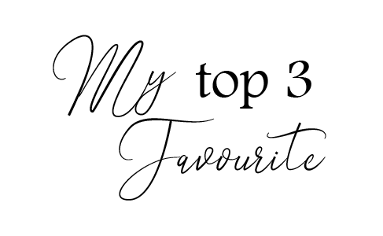

|
||
| NAME | Sarah Natasya Binti Nasri | |
|---|---|---|
| AGE | 21 years old | |
| DATE OF BIRTH | 18 January 2000 | |
| PLACE OF BIRTH | Kota Bharu, Kelantan | |
| SEX | Female | |
| RELIGION | Islam | |
| BLOOD TYPE | A+ | |
| HOME ADDRESS |
No.30 Jalan Anggerik 1, Saujana Utama 1, 47000 Sungai Buloh, Selangor. |
|
| FATHER'S NAME | Nasri Bin Saud | |
| MOTHER'S NAME | Suriza Binti Yahaya | |
| HOBBIES | Video Editing Photography Watching YouTube |
|
| STATUS | Student | |

Top 3 Favourite Songs |
Top 3 Favourite Movies
|


-This website is develop for IMS456(Basic Web Design and Content Management). Any information or material are used for educational purpose only.-